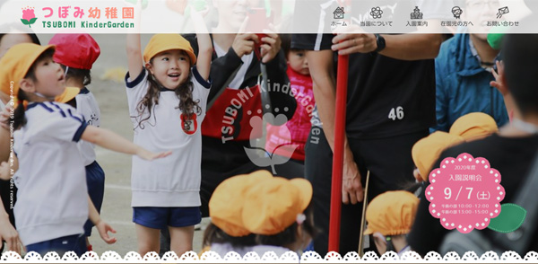

つぼみ幼稚園
職業訓練学校での卒業制作で架空の幼稚園サイトを制作致しました。 在園児専用メニューを利用するには認証が必要ですので以下のID,パスワードを使用ください。 園児ごとにIDを付与し、クラス単位でのメニューが生成されるようにしています。 ID:tsubomi Pass:kindergarden
つぼみ幼稚園
職業訓練学校での卒業制作で架空の幼稚園サイトを制作致しました。 在園児専用メニューを利用するには認証が必要ですので以下のID,パスワードを使用ください。 園児ごとにIDを付与し、クラス単位でのメニューが生成されるようにしています。 ID:tsubomi Pass:kindergarden
| Cliant | 職業訓練学校での卒業制作 |
|---|---|
| URL | http://tsubomi.lomo.jp/tsubomi-kindergarden/ |
| Description | 職業訓練学校での卒業制作で架空の幼稚園サイトを制作致しました。 在園児専用メニューを利用するには認証が必要ですので以下のID,パスワードを使用ください。 園児ごとにIDを付与し、クラス単位でのメニューが生成されるようにしています。 ID:tsubomi Pass:kindergarden |
| Cliant | 中口研究室教授：中口様 |
|---|---|
| URL | http://tsubomi.lomo.jp/nlab/ |
| Description | 職業訓練学校での企業サイト実習で千葉大学、中口教授からのサイトリニューアル案件を受け制作しました。 |
| Cliant | SQL攻略 管理人様 |
|---|---|
| URL | http://tsubomi.lomo.jp/sql/ |
| Description | Bootstrapのメガメニューを実装し、サイトリニューアルしたいというご相談があり、トップページのみ制作致しました。 |